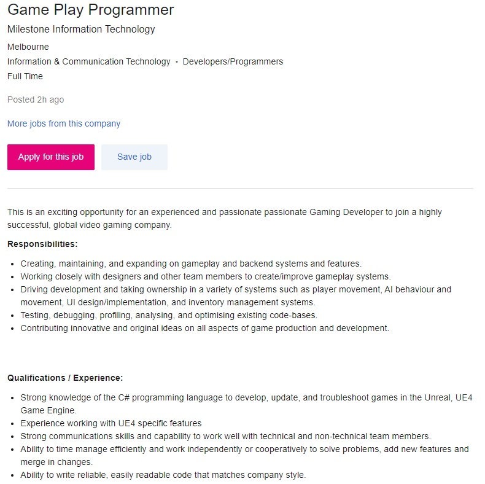

Figure 1: Game Play Programmer Job Listing by Milestone Information Technology, June 2021
I have chosen to focus on the role of Game Play Programmer as an ideal job. For this job listing, I would be tasked with development and maintenance of code related to gameplay, backend, and user experience. This position appeals to me because I have an interest in programming, keen attention to detail, and I like to work on games as well as play them.
Although this position does not ask for formal qualification, I would not expect to be hired without strong C# programming skills and an Unreal Engine 4 project as a part of my portfolio.
To meet these requirements, I would need to become more confident in using developer operations and source control tools, expand on my programming knowledge and become more fluent in C#, and become more adept at using Unreal Engine 4 to develop gameplay systems.
As I already have some basic experience using Unreal Engine tools, I can solidify these skills by creating a series of small games, with each game increasing the level of complexity and refining on previous concepts.